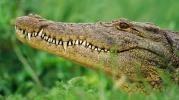
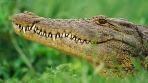

.jpg) 
PROFEPALa Procuraduría Federal de Protección al Ambiente (PROFEPA), es un órgano administrativo desconcentrado de la Secretaría de Medio Ambiente y Recursos Naturales (SEMARNAT) con autonomía técnica y operativa. La PROFEPA tiene como tarea principal incrementar los niveles de observancia de la normatividad ambiental, a fin de contribuir al desarrollo sustentable y hacer cumplir las leyes en materia ambiental. SEMARNATLa Secretaría de Medio Ambiente y Recursos Naturales (SEMARNAT) es la dependencia del gobierno federal encargada de impulsar la protección, restauración y conservación de los ecosistemas y recursos naturales y bienes y servicios ambientales de México, con el fin de propiciar su aprovechamiento y desarrollo sustentable. Trabaja en cuatro aspectos prioritarios:
Institucion de CocodriliaCocodrilia es una unidad de manejo ambiental del cocodrilo del pantano, en donde se manejan alrededor de 400 ejemplares de este tipo, esta especie es característico de la región, los ejemplares son utilizados para la reproducción y consumo humano Cocodrilia es una de conservación y aprovechamiento comercial del cocodrilo del pantano, cuentan con reproducción en cautiverio, es una empresa privada con todos los permisos establecidos estatal y federal para el aprovechamiento del cocodrilo |